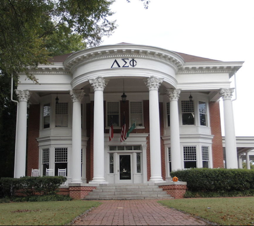
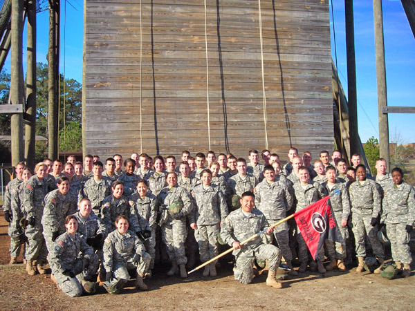

My little in the fraternity
World Class Composite
Honorary Doges #703
My name is Mitchell Walton and I am a student here at the University of Georgia. Although I go to school here in Georgia I am originally from Fairfax, Virginia where I was born and raised my whole life. During my free time away from school I have a few things I like to do. I love sports, wither it be talking about them with friends and family or watching on TV. Aside from sports I love to run in my free time. I try to run at least a few miles every day, but with school work that is easier said than done.
|
|
|
My little in the fraternity |
World Class Composite |
Honorary Doges #703 |
Organizations I'm involved in.I am a member of the Delta Sigma Phi fraternity here at UGA. Along with this I am currently a Cadet in Army ROTC.I love being in ROTC and hope to one day become an Officer in the United States Army. |
|  |  |
When I am home in Virginia and away from school I enjoy spending time with friends and family. It is always nice going home to my own bed and great company that I don’t get to see all the time like I used to. After college and during my careers I hope to be able to travel the United States and gain new perspectives on the world. I have already learned so much just by going out of state for college and I hope to continue this trend in the near future.
| Favorite Food | Tacos | Spaghetti and Meatballs | Cheeseburgers |
| Favorite Music Artists | Grateful Dead | The Weeknd | St. Paul and the Broken Bones |
| Favorite Sports | Football | Baseball | Lacrosse |
| Favorite Actors | John Hamm | Brad Pitt | Mark Wahlberg |